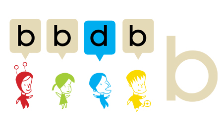

Una vez que tenga una
idea clara de lo que quiere lograr, es el momento de ponerlo en el formato que
va a utilizar. En este punto, puede crear vídeos, realizar evaluaciones,
configurar sus grupos, y hacer todas esas cosas divertidas.
Partes de implementación
Esta es
la única parte del proceso que es muy específica para la construcción de un
campo de desarrollador de curso. Se verá en otras unidades.
Asesoramiento de la
aplicación
Algunos
consejos generales:
- No trate de crear inmediatamente un producto final bien
acabado.
En su lugar,
aplicar una versión en bruto que contiene todo el material principal. No pulir la escritura; no hagas
ediciones finales en los videos. Tenga en cuenta que el siguiente
paso es tu curso es ver qué tan bien funciona con el
público. Cuando se hace esto, descubres cosas que quieres
cambiar. Asegúrese de que su horario le permite hacerlo y que usted
no ha hecho una inversión tan grande en ciertas partes de su aplicación
que no puede permitirse el lujo de volver a rehacer cuando se descubre que
usted necesita.
- Separe
el material básico del avanzado.
Diseñar el flujo
principal de su material para el punto medio de los estudiantes - no
demasiado fácil ni demasiado duro. Usted puede decidir que hay material
adicional y desea que estén disponibles para los estudiantes en cualquier
momento. Usted puede poner material extra en un montón de lugares
- Los
estudiantes en línea no dan el feedback que
estamos acostumbrados en una clase tradicional
Cuando usted puede ver
a sus alumnos, como en una clase en vivo, usted tiene una gran cantidad de
información para guiar lo que haces. Usted
puede ver dónde está interesado, cuando se aburren, y donde está
confundido. Sin embargo, para un curso en línea, se crea todo el material
del curso y decidir sobre la entrega exacta antes de entregarlo, no se puede
cambiar sobre la marcha. Usted no recibe retroalimentación de sus
estudiantes para que pueda ajustar el contenido. Lo más que podemos hacer
es interactuar con sus alumnos utilizando los mecanismos expuestos en Foro
de discusiones y anuncios y material opcional. También puede
recopilar datos para ayudar a mejorar las futuras versiones del curso.
- Ánimo.
Si usted es un maestro
experimentado, sabe que en una clase de 30 alumnos, por lo general hay un
elemento perturbador, un estudiante que progresa lentamente, y un alumno
que progresa rápidamente. Si
su curso llega a 30.000 estudiantes, se convierten 1.000 en alborotadores,
y así sucesivamente. No lo olvide. Sigue siendo el mismo
fenómeno.

Este texto es una traducción de las páginas Wiki del
manual de Course Builder